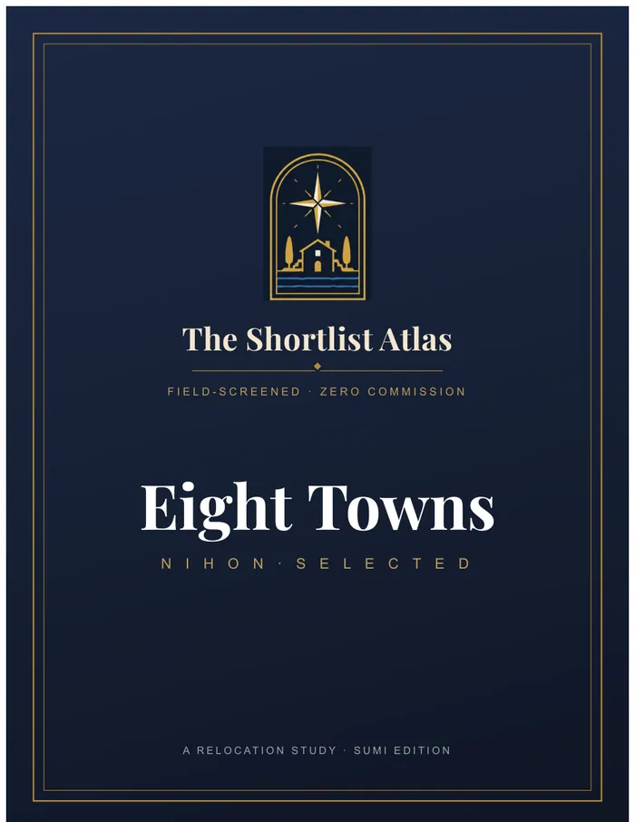
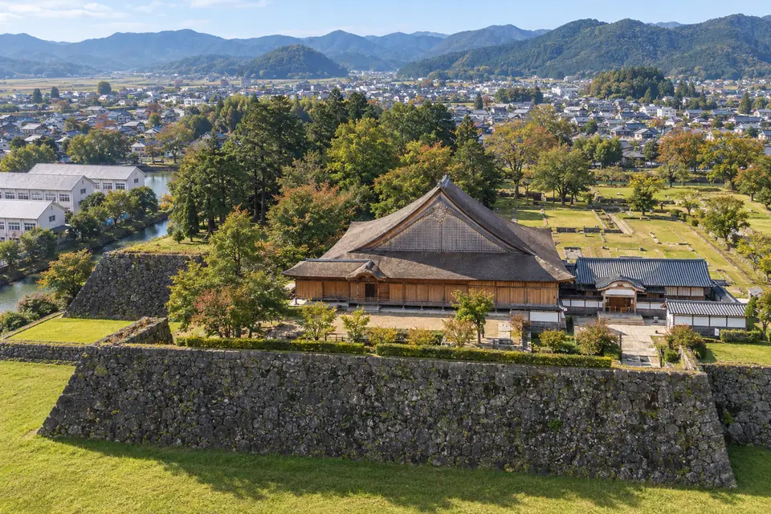
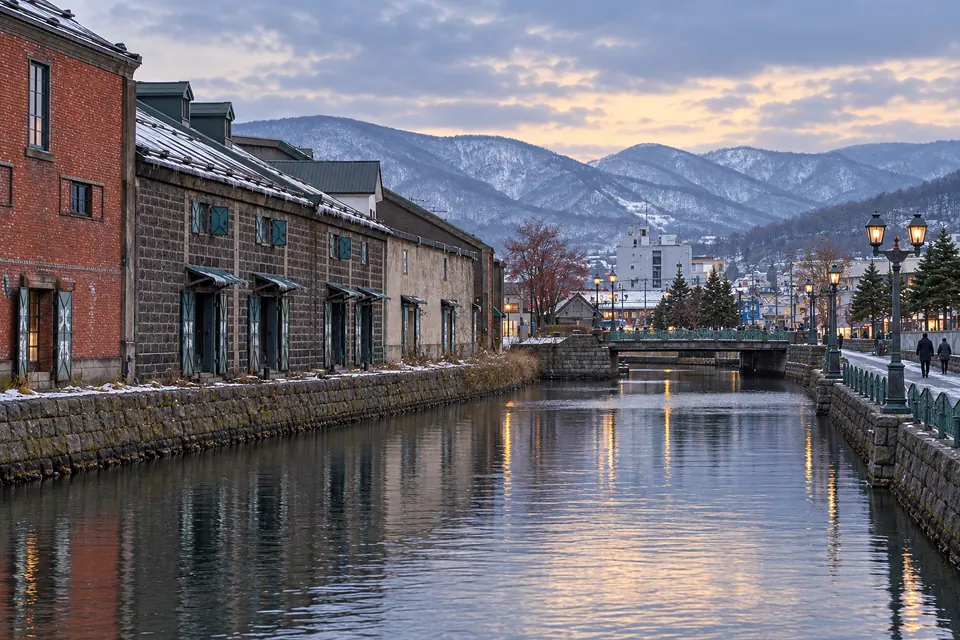
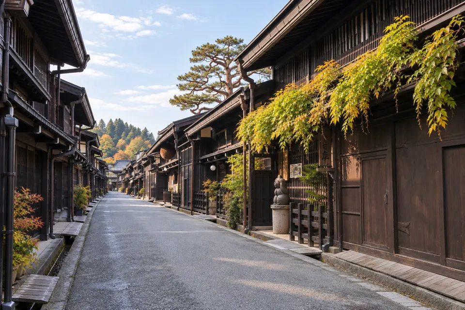
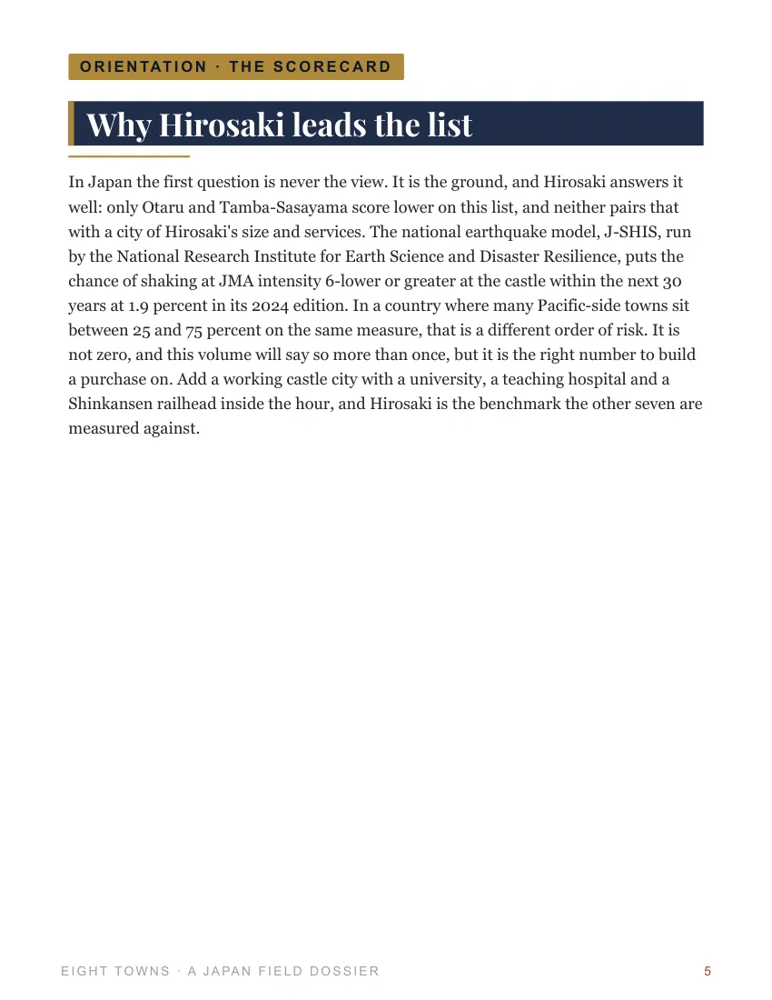
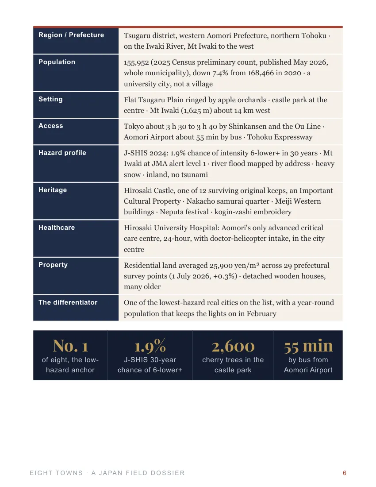

Why These Towns?
Each town pairs real local character with practical research, so you can compare the places that catch your eye side by side.
Castle moats, pottery towns and mountain streets. Explore eight Japanese settings where local craft and history are part of everyday life.

Cherry blossom over Hirosaki’s moat. Pottery in Karatsu. Snow along Otaru’s canal. Explore eight Japanese towns through their craft, history and everyday life, with clear information on transport, healthcare, winters and the property checks behind a longer stay.
Each town pairs real local character with practical research, so you can compare the places that catch your eye side by side.
Scenery and culture, getting there, everyday services, rental rules and natural risks.
Our Research Approach ↗Full town chapters, maps and image plates, plus country guidance on buying costs, renovation, residency and taxes.
Research reviewed 26 September 2026.
Start with the setting. Then read about daily life and the trade-offs. Every town opens a different possibility.
 No. 01
No. 01Cherry blossom fills the castle moat in spring, while samurai streets and apple orchards give Hirosaki depth beyond the season.
Matsue has an original black castle, moats you can explore by boat and a lake beside the city.
Kanazawa has gardens, gold leaf, craft workshops and a food culture worth returning for.
 No. 04
No. 04A castle above the bay, pottery for the tea ceremony and the lacquered floats of Kunchi.

No. 05Preserved castle-town streets and autumn food traditions draw weekend visitors from Kansai.
A red-tiled castle and samurai history give Aizu-Wakamatsu a strong identity in inland Fukushima.

No. 07Old warehouses line the canal, with the sea in front and snowy hills behind.

No. 08Timber merchant houses, sake breweries and festival craft fill Takayama’s old streets.
Go from first impression to the full picture: local history, living costs, property questions and the sources behind every finding.
Buy the Japan Atlas · $39 ↗
